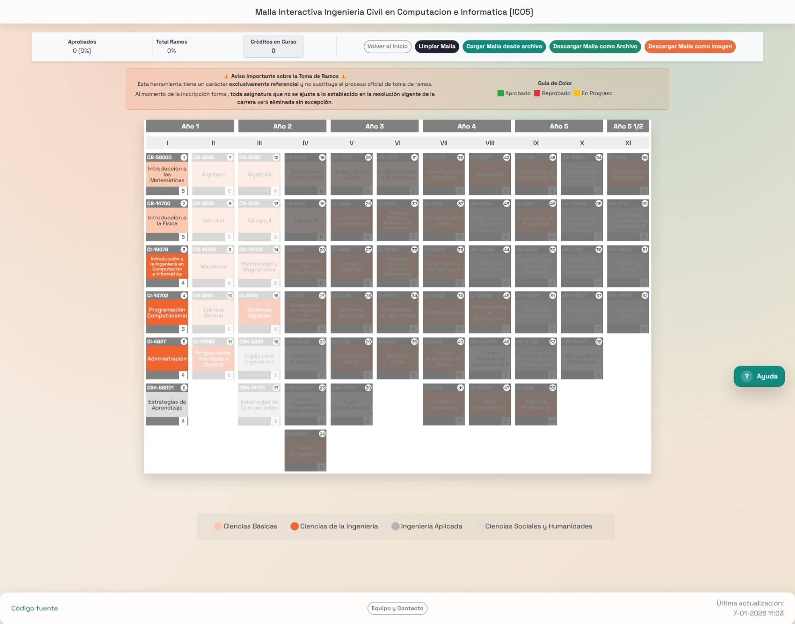
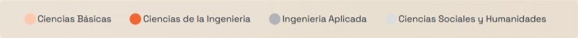
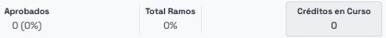
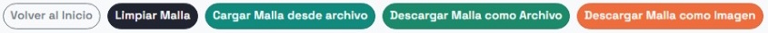

Malla Interactiva UCEN
Guía de Uso Completa
Todo lo que necesitas saber para aprovechar al máximo la malla interactiva
¿Cómo funciona la malla?
La malla interactiva permite visualizar tu avance académico de manera más simple y directa. Puedes ver todos tus ramos organizados por semestre, marcar los que has aprobado y planificar cuáles tomar próximamente.
La malla funciona mediante un código de colores que indica de qué categoría son las asignaturas. Revisa la leyenda de colores bajo la malla para identificar cada categoría.

Créditos
Créditos aprobados: Total de créditos que has completado y su porcentaje.
Total ramos: Porcentaje de asignaturas aprobadas.
Créditos en curso: Suma de los créditos de los ramos marcados en amarillo.
Estados de las Asignaturas
Cada asignatura en la malla puede tener uno de estos estados:

✅ Aprobado (Marcado en verde)
La asignatura fue aprobada exitosamente y permite desbloquear nuevas asignaturas.

❌ Reprobado (Marcado en rojo)
La asignatura fue reprobada y debe ser recursada en el próximo periodo académico en que se dicte.

📝 En Progreso / Por Tomar (Marcado en Amarillo)
Indica que planeas tomarla o que actualmente la estás cursando, ayudándote a planificar tu semestre.

⚪ Pendiente (Sin marcar)
La asignatura aún no ha sido cursada. Es el estado inicial de todos los ramos.
Sistema de Prerrequisitos

Al posicionar el cursor en un ramo verás:
- 🔴 Ramos en ROJO: Son los que DESBLOQUEAN el ramo seleccionado.
- 🟢 Ramos en VERDE: Son los que SE DESBLOQUEAN al aprobar el ramo seleccionado.
Cómo Usar la Interfaz
Herramientas de Gestión
En el panel lateral izquierdo encontrarás herramientas diseñadas para que tengas el control total de tu información:
- Volver al Inicio: Regresas a la pagina principal para elegir tu malla.
- Limpiar Malla: Borra todos los ramos del sistema, permitiendote empezar desde cero.
- Cargar Malla desde Archivo: Importa tu archivo de progreso (.json) para continuar donde lo dejaste en cualquier dispositivo.
- Descargar Malla como Archivo: Guarda un respaldo de tus ramos marcados en tu computador.
- Descargar Malla como Imagen: Genera una captura de pantalla de tu malla completa, ideal para compartir o imprimir.
📚 Recuerda
Esta herramienta es meramente ilustrativa. Siempre verifica la información con tu coordinación académica.